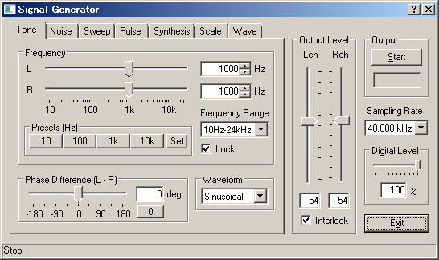
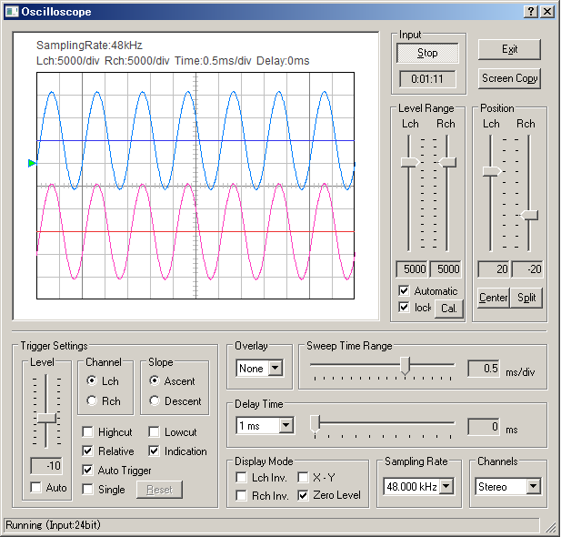

DSSF3 > RA > Operation Guide > Basic measurement procedure
Measurement by the oscilloscope
In the signal generator, four kinds of waveforms (sinusoidal, triangle, square, sawtooth) can be created with an arbitrary frequency. The oscilloscope can display the waveform of the input signal as below. The signal generator and the oscilloscope can be used to see how the signal is changed when the signal goes through some devices. This is the most basic test in general audio applications, for example, for checking the audio device's operation, diagnosing, and evaluating its performance.

Connect the output of the soundcard with the input terminal of an audio device (e.g. amplifier). Then connect the output terminal of the amplifier with the input of the soundcard. In this configuration, the signal from the PC goes to the amplifier and comes back to the PC. Now, by starting the signal generator and the oscilloscope, the output of the amplifier can be measured. You can see whether the signal is correctly amplified, and whether the signal is distorted or not.
The oscilloscope shows the waveform of the input signals in real time. Difficult settings can be ignored at first. By just clicking the Start button, the signal is triggered and the level range is adjusted automatically, and the waveforms are displayed in the proper positions. Snapshots of the measurement screen can be easily taken by the Screen Copy button. Automatic over sampling is applied to the signal to display the smoothed waveform especially for the short sweep time range.

DSSF3 > RA > Operation Guide > Basic measurement procedure